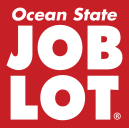
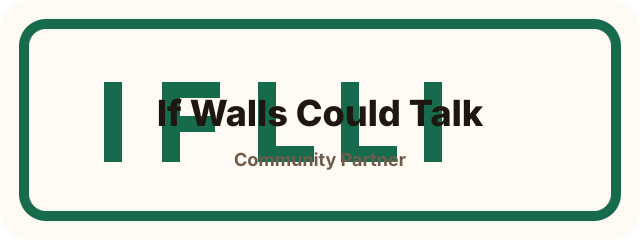
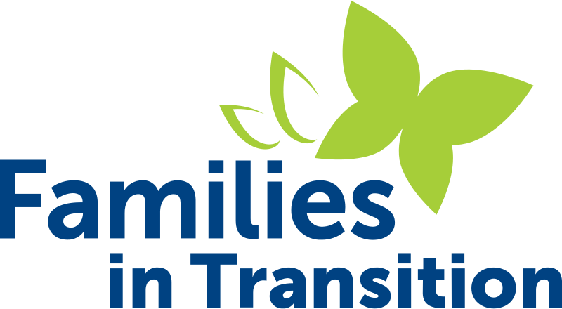

Food logistics partners in New Hampshire
Our partners


Interested in partnering with TCF?
We welcome conversations with businesses, nonprofits, food providers, and community organizations that want to help strengthen food access and distribution.